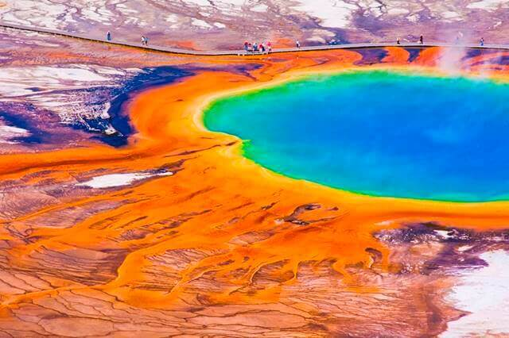

Lugares Incríveis pelo mundo
Lago Manchado — Colômbia Britânica
Com um formato estranho, as pequenas manchas arredondadas de cor exótica e que surgem durante o verão são consideradas sagradas pelos nativos de Kliluk
A Grande Muralha – China
Símbolo do país e um dos lugares mais famosos do mundo, a Grande Muralha da China é um daqueles lugares imperdíveis quando
se viaja ao país — a ponto de alguns dizerem que quem não visitou a Muralha Chinesa quando esteve em território chinês, não foi à China.
Outros lugares interessantes...
- Vulcão Kilauea — Havaí
- Colinas Chocolate — Filipinas